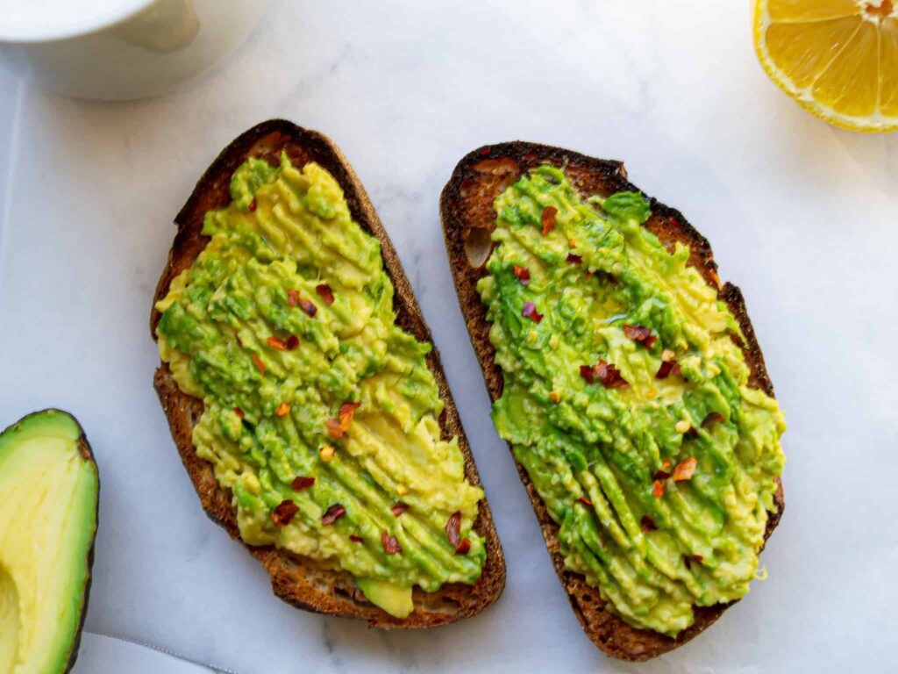

Avocado Toast Recipe

Description
Avocado toast is pretty divisive: You either can’t get enough of it, or you’re totally sick of hearing about it. With a plethora of avocado toast recipes out there—some simple, others more complex—it’s easy to wonder if we’ve reached peak avocado.
Ingredients
- Avocado
- Fresh lemon juice
- Salt
- Ground black pepper
- Slice whole grain bread
- Extra-virgin olive oil
Steps
- In a small bowl, combine avocado, lemon juice, salt, and pepper. Gently mash with the back of a fork.
- Top toasted bread with mashed avocado mixture. Drizzle with olive oil and sprinkle over desired toppings.